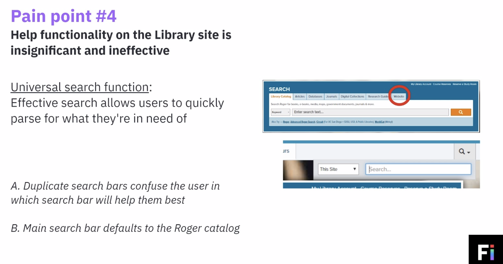
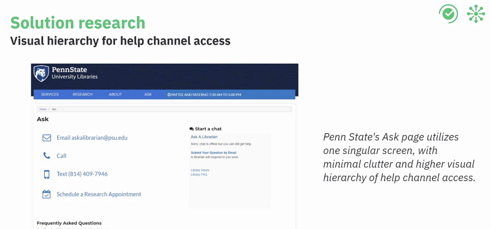
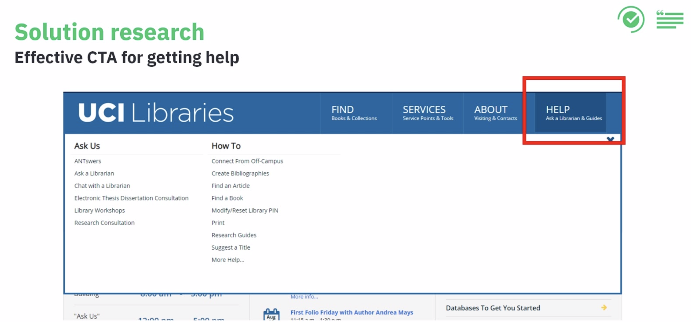

UCSD Library Website
Creating better experiences for online help services
Context of our research
As part of the Geisel Library Revitalization Initiative, the library aims to develop a service delivery model that "empowers users to actively engage with library services, and deliver an integrated user experience across those services." The service points we know about include: physical help desks and virtual website services. Part of this service model incorporates the help channels used across the physical and virtual spaces.
The problem
We know that Library users, including students, faculty, researchers, and guests, intend to use the website to: remotely access Library resources, pre-organize visits to the Library, and learning more about Library services. But if a user has trouble accessing or using services to meet their needs, how do they ask for help? We created an action plan to answer:
Research Process
Collecting user insights
We divided our search for answers from users into two sets of investigation:

Take a deeper look into the website
Users from the interviews and survey provided insightful comments on the help channels being time-inconvenient, inefficient, slow, or unintuitive
So, our team performed an expert review to analyze the usability of the Library website and report issues to inform new design decisions.

Solution Research



Web Design Proposals
Rethinking the Ask Us page
The "Ask Us" page was flagged by Fi agents in the expert review as highly inefficient in motivating a user to use advised help channels.
Recreating a central hub for finding help
A newly redesigned page, with effective display of information and quick actions for accessing help chansels, is an easily implementable solution for the site.
Before vs. After


Moving Forward
Team Members
Learn more about Fi@UCSD
Back to Projects
© 2020 Xirui He
© 2020 Xirui He